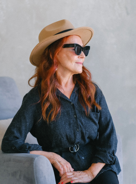
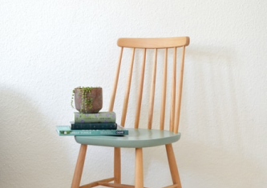
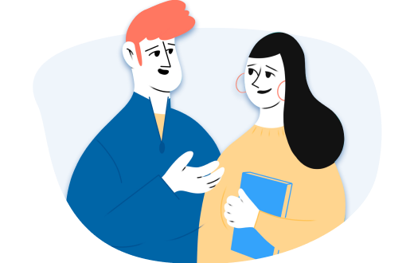
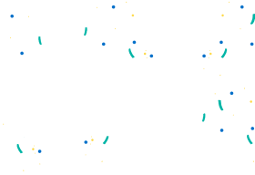
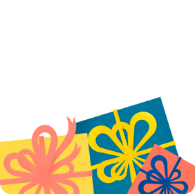

Один из самых важных навыков, которые может дать работа с психотерапевтом - умение в разных
ситуациях по-разному обходиться со своими эмоциями. Снять этот процесс с автопилота и перевести
его в поле сознания.
Давайте, к примеру, разберем тревогу. Можно разложить перед собой целую коллекцию доступных
реакций и выбрать нужную:
Мы знаем, что нуждаться в помощи и поддержке в трудные периоды жизни абсолютно нормально для
любого человека, и стремимся сделать психотерапию безопасной, удобной и доступной каждому
Аня Крымская
Что еще можно делать с тревогой?
Управлять ей через что-то внешнее: включать музыку, которая создает другое настроение,
сесть
за работу с цифрами, которая быстренько активизирует другие участки мозга, читать блоги,
которые вас успокаивают и отвлекают.
А еще порой можно разрешить себе тревогу заесть чем-то вкусным. Это, конечно, не самая
здоровая стратегия, но в ряде ситуаций можно считать ее вполне рабочей. Особенно, когда
внутренний ресурс на нуле, а поддерживающее окружение не в доступе.
Онтогенез речи отражает групповой эриксоновский гипноз.
Чем шире доступный вам репертуар реакций и чем более осознанно вы можете выбирать из него то,
что лучше всего подойдет в каждой конкретной ситуации, тем больше будет ваша устойчивость к
стрессу, депрессии, неопределенности, да и к жизни в целом.
Мы знаем, что нуждаться в помощи и поддержке в трудные периоды жизни абсолютно нормально для
любого человека, и стремимся сделать психотерапию безопасной, удобной и доступной каждому

Одна из ключевых задач психотерапии как раз и заключается в том, чтобы этот репертуар расширять
и обучать человека пользоваться доступными ему реакциями в той последовательности, пропорции и
объеме, которые подходят именно ему. Без оглядки на то, "как правильно" или "как у других".

Чем шире доступный вам репертуар реакций и чем более осознанно вы можете выбирать из него
то, что лучше всего подойдет в каждой конкретной ситуации, тем больше будет ваша
устойчивость к стрессу, депрессии, неопределенности, да и к жизни в целом.
А еще порой можно разрешить себе тревогу заесть чем-то вкусным.
Чем шире доступный вам репертуар реакций и чем более осознанно вы можете выбирать из него то,
что лучше всего подойдет в каждой конкретной ситуации, тем больше будет ваша устойчивость к
стрессу, депрессии, неопределенности, да и к жизни в целом.
Упражнение #1
Нужно последовательно напрягать и расслаблять каждую мышцу в теле на несколько секунд.
Напрягать
стоит довольно сильно, чтобы потом отчетливее ощущать расслабляющий эффект. Начать можно с
пальцев ног и постепенно подниматься вверх. Смысл в том, чтобы через напряжение дать стрессу
выход, а затем вновь привести себя в спокойное состояние через расслабление
Что еще можно делать с тревогой?
Управлять ей через что-то внешнее: включать музыку, которая создает другое настроение,
сесть за работу с цифрами, которая быстренько активизирует другие участки мозга, читать
блоги, которые вас успокаивают и отвлекают.
А еще порой можно разрешить себе тревогу заесть чем-то вкусным. Это, конечно, не самая
здоровая стратегия, но в ряде ситуаций можно считать ее вполне рабочей. Особенно, когда
внутренний ресурс на нуле, а поддерживающее окружение не в доступе.
Чем шире доступный вам репертуар реакций и чем более осознанно вы можете выбирать из него
то, что лучше всего подойдет в каждой конкретной ситуации, тем больше будет ваша
устойчивость к стрессу.
Чем шире доступный вам репертуар реакций и чем более осознанно вы можете выбирать из него то,
что лучше всего подойдет в каждой конкретной ситуации, тем больше будет ваша устойчивость к
стрессу, депрессии, неопределенности, да и к жизни в целом.
Упражнение #2
Нужно последовательно напрягать и расслаблять каждую мышцу в теле на несколько секунд.
Напрягать стоит довольно сильно, чтобы потом отчетливее ощущать расслабляющий эффект. Начать
можно с пальцев ног и постепенно подниматься вверх. Смысл в том, чтобы через напряжение дать
стрессу выход, а затем вновь привести себя в спокойное состояние через расслабление

Чем шире доступный вам репертуар реакций и чем более осознанно вы можете выбирать из него
то, что лучше всего подойдет в каждой конкретной ситуации, тем больше будет ваша
устойчивость к стрессу, депрессии, неопределенности, да и к жизни в целом.
Чем шире доступный вам репертуар реакций и чем более осознанно вы можете выбирать из него
то, что лучше всего подойдет в каждой конкретной ситуации, тем больше будет ваша
устойчивость к стрессу, депрессии, неопределенности, да и к жизни в целом.
Одна из ключевых задач психотерапии как раз и заключается в том, чтобы этот репертуар расширять
и обучать человека пользоваться доступными ему реакциями в той последовательности, пропорции и
объеме, которые подходят именно ему. Без оглядки на то, "как правильно" или "как у других".
Упражнение #1
Нужно последовательно напрягать и расслаблять каждую мышцу в теле на несколько секунд.
Напрягать стоит довольно сильно, чтобы потом отчетливее ощущать расслабляющий эффект. Начать
можно с пальцев ног и постепенно подниматься вверх. Смысл в том, чтобы через напряжение дать
стрессу выход, а затем вновь привести себя в спокойное состояние через расслабление
Self
.
Самооценка и самопринятие
.
Самооценка и самопринятие
.
Упражнения
Чувства и эмоции
.
Самооценка и самопринятие
.
Тревога

Загружаем свободные окошки
Все в порядке, сейчас мы перенаправим вас в сервис записи lick,
через который удобно выбрать
дату, время встречи и оплатиь её
Лилия
Психолог
Опыт6 лет . 43 года
С чем работает психолог
Тревога, тревожности
Подавленность
Тревога и панические атаки
Переписка
Видео


Дарите заботу
8 видео сессий
Проработать небольшие проблемы и продвинуться
в решении сложных запросов